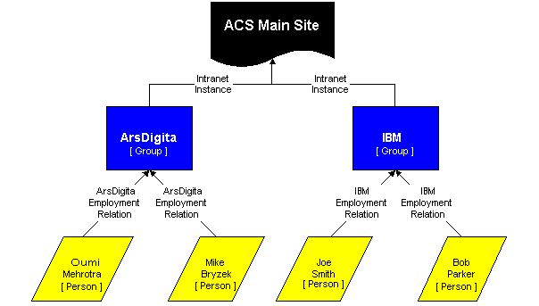

The subsites package must also allow administrators to dynamically extend existing group and relationship types and to define attributes for new types.
The other piece of the subsite system is a subsite package that provides subsite admins a "control panel" for administering their subsite. This is the same package used to provide all the community core functionality available at the "main" site which is in fact simply another subsite.This control panel needs to treat individual groups as belonging to a single instance of a subsite. However, groups themselves are not enough. We must allow a subsite to specify its own types of groups, instances of those types (or of a type from a parent subsite), and types of relationships between those groups.
The Intranet application may model employees in many ways. Without loss of generality, we assume each employee is a "person" with an "employment relation" to a company. Figure 1 shows an outline of what the ACS Site Map may look like with several companies. Note that each company represents one instance of the intranet application.
|

Figure 1: Structure of Multiple Intranets |
Note: The current version of ACS, 4.0.1, does not treat object types as objects. This is a problem for subsites wishing to support dynamic sub-typing as name collisions are common because object types do not have context. The ability to create unique types of relationships for a given instance of the intranet application requires the object type to be unique to the instance. In other words, the context of the object type is set to the subsite. We use the context here so that we can automatically maintain permissions from subsite to object type.
Each group type should specify a set of permissible relationship types to use for groups of that type.
The administrator must be able to specify the permissible relationship types to use for each group. The defaults are inherited from the list of permissible relationship types for the group's type.
Users should be able to create a new type of group.
Users should be able to dynamically add attributes to group types. These attributes should be stored efficiently.
Users should be able to dynamically remove attributes from a group type. Removing the attribute removes all values specified for that attribute.
The API must support the following types of constraints on relationships:
Each group type should maintain a list of all relationship types that can be used to add elements to groups of this group type.
Relationships listed as allowable for a given group type should link to more information about the relationship type, including any constraints that must be satisfied before relations of the specified type are created.
The system provides a well-defined API call that adds a given relationship type to the list of allowable relationship types to apply to a given group or group type. Any subtype of an allowable relationship type will also be allowed.
When creating a new group type, the UI should support ACS datatypes with appropriate UI.
- 130.10.10 Display allowable relationship types
The group type summary page should display all the relationship types used to add relations to groups of this type and allow the user to add permissible relationship types or to remove existing ones.
- 130.10.20 Display groups
Display all groups of this type, based on permissions. UI should scale well with a large number of groups.
- 110.10 Create an instance of a particular group type
When creating a new group of the specified type, the UI must request values for each of the attributes of that type, including attributes of all supertypes (up the type tree until the object of type 'group').
- 130.10.20 Display type attributes
Display all attributes for this group type, including supertypes.
- 130.10.20 Delete group type
Allow administrators to delete the group type. This action removes all groups of this type.
150.10.10 Display relations Each group should display all the parties related to it and through what relationship type. Offer links to remove each relation or to add a new relation of a given type. The UI for relations should scale well.
150.10.20 Display attributes Display all attributes of the group with links to edit each.
150.10.20 Delete group Allow administrators to delete the group including all relations to the group.
150.20 Integration with relational Segments and Constraints The group summary page should offer links to define relational segments for the group, based on a particular relationship type. The UI must also integrate with the relational constraints data model to support defining constraints on intra-party relations.
| Document Revision # | Action Taken, Notes | When? | By Whom? |
|---|---|---|---|
| 0.1 | Creation | 11/16/2000 | Michael Bryzek |
| 0.2 | Major Revisions | 11/24/2000 | Michael Bryzek |
| 1.0 | Final Revisions | 1/11/2001 | Michael Bryzek |